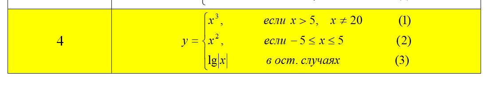

В соответствии со своим вариантом необходимо написать Java-скрипт (lab2-3.html) для вычисления значения функции y.
В выводимом файле предусмотреть форматирование документа, вывод текста задания на лабораторную работу, включая рисунок исходной функции, и вывод информации о разработчике скрипта.
Рисунок исходной функции:
Результат:
y =